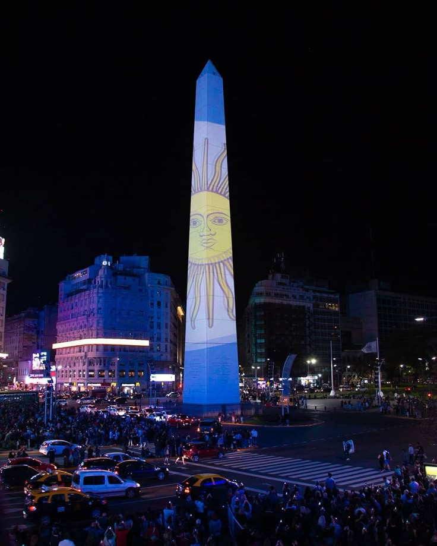

El Obelisco
Obelisco de Buenos Aires es uno de los monumentos más reconocidos de Argentina y un símbolo representativo de la ciudad. Se encuentra ubicado en la Plaza de la República, sobre la Avenida 9 de Julio, una de las avenidas más anchas del mundo.
.jpg)
Su historia
El monumento fue inaugurado el 23 de mayo de 1936 para conmemorar el cuarto centenario de la primera fundación de Buenos Aires. Su construcción estuvo a cargo del arquitecto argentino Alberto Prebisch, quien diseñó una estructura moderna y simple que con el tiempo se convirtió en un ícono nacional.
El Obelisco tiene una altura aproximada de 67 metros y está construido principalmente con piedra blanca traída desde Córdoba. En su interior posee una escalera con varios escalones que permite llegar hasta pequeñas ventanas ubicadas en la parte superior.
A lo largo de los años, el Obelisco fue escenario de importantes celebraciones, manifestaciones y eventos culturales. Miles de personas suelen reunirse allí durante festejos deportivos, conciertos y fechas patrias importantes para el país.

El monumento hoy
La zona donde se encuentra el monumento es uno de los puntos turísticos más visitados de Buenos Aires. A su alrededor se pueden encontrar teatros, restaurantes, cafeterías y diferentes espacios culturales que forman parte de la vida cotidiana de la ciudad.
Con el paso del tiempo, el Obelisco se transformó en un símbolo de identidad para los habitantes porteños. Además de su valor histórico, representa el movimiento, la actividad y la energía característica del centro de Buenos Aires.
Actualmente, el Obelisco continúa siendo uno de los lugares más fotografiados por turistas nacionales e internacionales. Su presencia en películas, fotografías y eventos oficiales lo convirtió en una imagen reconocida en todo el mundo.